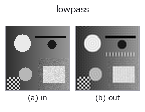

frequency op• Data kinds: image → image
• Call: fullseye.apply(img, "lowpass", a=0.5, b=0.5) (the 2-D model is one image plus two scalar knobs a,b∈[0,1])

*The figure is the actual output on a synthetic 128×128 input. Left: input, right: output. Point clouds are drawn as a top-down scatter (brightness = z), 1-D series as a line plot, volumes as the maximum-intensity projection along z, videos as the middle frame, complex images as magnitude; return values that are not pictures are shown as the values themselves.*
Sweeping knob a (0.1 / 0.5 / 0.9, the other knob at its default):
▸ lowpass: knob a sweep (docs site)
*Knob b does not change the output (measured: identical at 0.1 / 0.5 / 0.9).*
On other images (synthetic scene / photo / coins. Top row: inputs, bottom row: their outputs. Knobs at default):
▸ lowpass: other inputs (docs site)
*The 4th column is a colour (H,W,3) input. This op handles colour without crossing channels (it does not convolve the colour channel as a third spatial axis).*
Low-pass filter via FFT (blurring). No corresponding single HALCON op has been specified.
a sweeps the cutoff frequency cutoff = 0.05 + 0.4a (normalised frequency; 0 to 0.5 is the range up to Nyquist). b is unused. A 2-D FFT keeps only the low-frequency components with rad <= cutoff, and the real part of the inverse FFT is clipped to [0,1]. The smaller a, the stronger the blur. The border is treated as periodic (by the nature of the FFT, the image edge is regarded as adjacent to the opposite side), so note that the border handling differs from the reflect/edge of the ndimage family of filters.
• gallery2d_texture_freq family guide
• Sample-data catalog (download URLs / licences) — 2-D uses skimage.data (BSD/public domain) plus synthetic images; 3-D lists download URLs for real data sources (Stanford, PDS, …).
• Operator provenance and references — the sources of the research/methods this op family came from.
• The canonical algorithm (author, year) and its uses are named in the family usage guide above.
The program below has been verified to run (same input as the figure). In Studio's help this block becomes buttons that load and run it on the spot.
lowpass 0.40 0.50
▸ Load this pipeline · Load & run
• degenerate_inputs — py -3.11 examples/degenerate_inputs.py
• gallery2d_texture_freq — py -3.11 examples/gallery2d_texture_freq.py
• optics_four_f_processor — py -3.11 examples/optics_four_f_processor.py
• signal_filter — py -3.11 examples/signal_filter.py
image as input)identity · gaussian · mean_box · bilateral · unsharp · median · min_filter · max_filter
frequency)highpass · sk_butterworth · fft_image · power_real · power_byte · phase_rad · highpass_image · bandpass_image
*Provenance: ops.py — 2D operator registry. This per-op note is generated by tools/opdocs.py md (do not hand-edit).*
© 2026 Kazufumi Furuse — Fullseye operator documentation. Licensed under Apache-2.0.